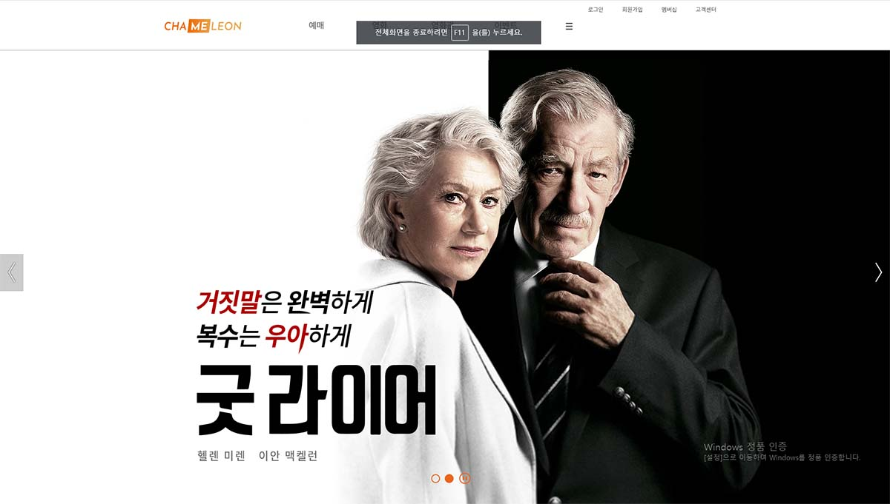

View

작업물의 실제 적용 중 일부입니다.
타 영화관 사이트의 불편함을 해소하기 위해 시작한 프로젝트입니다. 저를 포함해 3명의 조원이 작업했습니다. 정확히 어떤 부분을 담당했는지는 본문의 ‘Work’란을 확인해주세요. 또한 코딩은 퍼블리셔/디자이너 구분 없이 함께 이뤄졌습니다.
2019.11.11~2019.12.13
퍼블리셔: 김동현 / 디자이너: 구혜진, 김민진
HTML5, CSS3, JQuery, Photoshop, Illustator
작업물의 실제 적용 중 일부입니다.
팀의 아이디어를 모아 가장 나은 디자인을 검토하고,
카카오 오븐을 이용하여 간략하게 스토리보드로 정리했습니다.
메인 슬라이더의 배너 중 하나를 작업했습니다.
공식 포스터를 참고하여 간략하게 타이포를 넣고,
일부 글자를 강조하는 방식을 사용했습니다.
팀의 아이디어를 모아 가장 나은 디자인을 검토하고,
카카오 오븐을 이용하여 간략하게 스토리보드로 정리했습니다.
메인 슬라이더의 배너 중 하나를 작업했습니다.
공식 포스터를 참고하여 간략하게 타이포를 넣고,
일부 글자를 강조하는 방식을 사용했습니다.